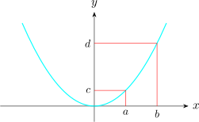

3.12 Area of Surface of Revolution
When an arc of a curve is revolved about an axis it generates a surface called the surface of revolution.
If an arc of the curve \(y = f(x)\) from \(x = a\) to \(x = b\), is revolved about the \(x-\)axis, its area of surface of revolution is given by \[S_{AREA} = 2\pi \int ^b_a y \hspace {0.1cm} \sqrt {1 + \Bigg (\dfrac {dy}{dx}\Bigg )^2}\hspace {0.1cm} dx\] provided \(y = f(x)\) and \(f'(x)\) are continuous and \(f(x)\) does not need to change sign on the interval.
Find the area of the surface of revolution generated by revolving one loop of \(8y^2 = x^2(1 - x^2)\) about the \(x-\)axis.
Solution.
We find the \(x-\)axis intercepts \(\hspace {0.2cm} x^2 (1 - x)^2 = 0\)
\(\implies \hspace {0.5cm} x = -1,\hspace {0.3cm} 0, \hspace {0.3cm} 1\)
\(y = \dfrac {x \sqrt {1 - x^2}}{2\sqrt {2}}\)
\begin {align*} \implies \hspace {0.5cm} \dfrac {dy}{dx} & = \dfrac {1}{2\sqrt {2}}\Bigg (\frac {1}{2} x (1 - x^2)^{\dfrac {-1}{2}}(-2x) + (1 - x^2)^{\dfrac {1}{2}}\Bigg )\\\\ & = \frac {1 - 2x^2}{2\sqrt {2}\big (1 - x^2\big )^{\dfrac {1}{2}}}\\ \end {align*}
\begin {align*} \implies \hspace {0.5cm} 1 + \Bigg (\dfrac {dy}{dx}\Bigg )^2 & = 1 + \dfrac {\Big (1 - 2x^2\Big )^2}{8\Big (1 - x^2\Big )} = \frac {4x^4 - 12x^2 + 9}{8\Big ( 1 - x^2\Big )}\\\\ & = \frac {\Big (2x^2 - 3\Big )^2}{8\Big (1 - x^2\Big )}\\ \end {align*}
\begin {align*} \implies \hspace {0.5cm} \sqrt { 1 + \Bigg (\dfrac {dy}{dx}\Bigg )^2} & = \sqrt {\dfrac {\Big (2x^2 - 3\Big )^2}{8\Big (1 - x^2\Big )}}\\\\ & = \dfrac {-2x^2 + 3}{2\sqrt {2}\sqrt {1 - x^2}}\\ \end {align*}
\begin {align*} \text {Thus}\hspace {0.5cm} S_{AREA} & = 2\pi \int _0^1 \dfrac {x \sqrt {1 - x^2}}{2\sqrt {2}} \cdot \dfrac {-2x^2 + 3}{2\sqrt {2}\sqrt {1 - x^2}}\hspace {0.2cm}dx\\\\ & = \dfrac {\pi }{4}\int ^1_0 \Big (2x^3 + 3x\Big )dx = \dfrac {\pi }{4}\Bigg [-\dfrac {x^4}{2} + \dfrac {3}{2}x^2\Bigg |^1_0\\\\ & = \dfrac {\pi }{4}\Bigg [-\dfrac {1}{2} + \dfrac {3}{2}\Bigg ]\\\\ & = \dfrac {\pi }{4}\hspace {0.2cm}\text {units squared}\\ \end {align*}
\begin {align*} S_{AREA} & = 2\pi \int ^d_c x\hspace {0.1cm} \sqrt {1 + \Bigg (\dfrac {dx}{dy}\Bigg )^2}\hspace {0.2cm}dy\hspace {1cm},\hspace {0.3cm} c\leq y \leq d\\ \text {or}&\\ & = 2\pi \int ^b_a x\hspace {0.1cm} \sqrt {1 + \Bigg (\dfrac {dy}{dx}\Bigg )^2}\hspace {0.2cm}dx\hspace {1cm},\hspace {0.3cm} a\leq x \leq b\\\\ \end {align*}
Find the area of the surface generated by revolving the arc \(y = \dfrac {1}{2}x^2\hspace {0.2cm}\) from \(x = 0\) to \(x = 3\).

Solution.
\(\displaystyle {S_{AREA} = 2\pi \int ^b_a x\hspace {0.1cm} \sqrt {1 + \Bigg (\dfrac {dy}{dx}\Bigg )^2}\hspace {0.2cm}dx}\)
\(\displaystyle {\dfrac {dy}{dx} = x \hspace {0.5cm} \implies \hspace {0.5cm} 1 + \Bigg (\dfrac {dy}{dx}\Bigg )^2 = 1 + x^2 }\)
\(\displaystyle {\implies \hspace {0.5cm} \sqrt {1 + \Bigg (\dfrac {dy}{dx}\Bigg )^2} = \sqrt { 1 + x^2}}\)
Thus \(\displaystyle {S_{AREA} = 2\pi \int ^3_0 x\sqrt {1 + x^2}\hspace {0.2cm}dx}\)
Let \(u = 1 + x^2 \hspace {0.5cm} \implies \hspace {0.5cm} du = 2x dx\hspace {0.2cm}\) or \(\hspace {0.2cm} xdx = \dfrac {1}{2}u\)
\begin {align*} \therefore \hspace {0.5cm} S_{AREA} & = 2\pi \int ^{10}_1u^{1/2}\hspace {0.1cm} \dfrac {1}{2}du\\ & = \pi \int ^{10}_1 u^{1/2}du = \pi \Bigg [ \dfrac {2}{3}u^{3/2}\Bigg |^{10}_1\\\\ & = \dfrac {2}{3}\pi \Big [10^{3/2} - 1 \Big ]\hspace {0.2cm} \text {sq units}\\ \end {align*}
Questions on this section
Stuck on something here? Ask below and it stays attached to this topic.